أذكارك وأدعيتك اليومية، في جيبك
«أذكار» تطبيق عربي هادئ لأندرويد يرافقك في أذكار الصباح والمساء والنوم والاستيقاظ، ويضم كتاب حصن المسلم كاملاً بنصوصه وفضله وتخريجه. كل بياناتك على هاتفك، ويعمل بلا إنترنت وبلا حساب وبلا إعلانات.
تنزيل لأندرويد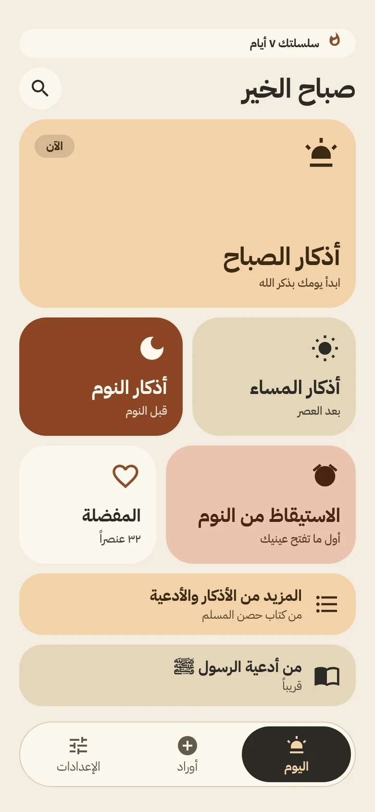
ما هو «أذكار»؟
تطبيق للذكر اليومي صُمّم ليكون سريعاً وواضحاً ومريحاً للقراءة. تفتحه فتجد ذكر وقتك أمامك، وتعدّ بضغطة، وتنتقل بالسحب، ولا يقطعك عنه شيء. نصوص الأذكار منقولة حرفياً من موقع «حصن المسلم» مع تخريجها وفضلها كما وردت،.
تتبدّل الشاشة الرئيسية بحسب الوقت: الاستيقاظ (٤ – ٦ ص)، ثم الصباح حتى ٣ م، ثم المساء حتى ٩:٣٠ م، ثم النوم. الجلسة الحالية تتصدّر الشاشة، وتُعلَّم «اكتملت» عند إنهاء أذكارها، وتحفّزك سلسلة الأيام على المواظبة.
قارئ يُبقي عينك على الذكر
ذكر واحد في كل صفحة، بخط كبير واضح، وعنوانه في أعلاه. اضغط للعدّ، واسحب يميناً ويساراً للتنقل، أو استعمل الأزرار.
- عدّاد بعدد المرات الواردة، مع الانتقال التلقائي إذا أحببت.
- زر «الفضل والتخريج» يعرض فضل الذكر ومصدره.
- للتهليل مفتاح لاختيار ١٠ أو ١٠٠ مرة.
- تضبط حجم الخط ووزنه وعرض التشكيل كما تريد.
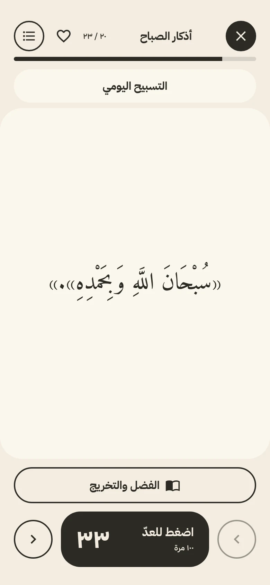
آيات بخط المصحف الشريف
آية الكرسي وخواتيم البقرة والإخلاص والمعوّذات والملك والسجدة تظهر بخط المصحف الشريف برسم الآيات وأرقامها، وبسملتها واستعاذتها بخط مزخرف، كل سورة في صفحة بعدّادها.
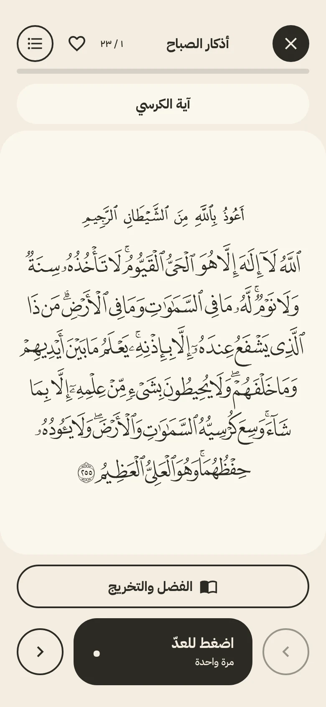
الكتاب كاملاً، مرتّباً بحسب المناسبة
أكثر من مئتي ذكر ودعاء في إحدى عشرة فئة: الطهارة والصلاة، اللباس والمنزل، الليل والأحلام، الهم والكرب، الأسرة والمرض والموت، الطعام والصيام، الآداب الاجتماعية، السفر، الحج والعمرة وغيرها. كل ذكر بنصه وفضله وتخريجه.
- بحث سريع في كل الأذكار من الشاشة الرئيسية.
- قسم «من أدعية الرسول ﷺ» قادم قريباً.
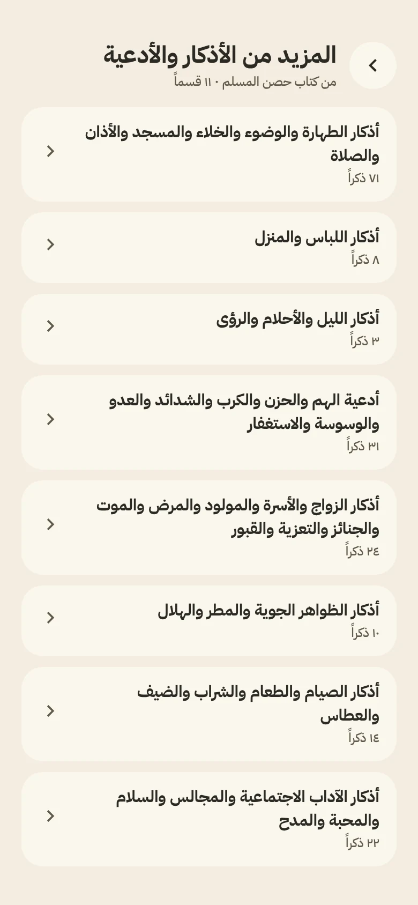
قوائمك أنت
احفظ أي ذكر بقلب، أو أنشئ قوائم باسمك ولونك، وأضف إليها قسماً كاملاً أو أذكاراً مختارة بالبحث والتحديد المتعدد، ثم راجع واختر «تأكيد». ويمكنك حفظ أي باب كاملاً كاختصار باسم تحدده.
- العنوان يظهر فوق كل ذكر محفوظ.
- حذف الذكر يسبقه تأكيد في ورقة سفلية.
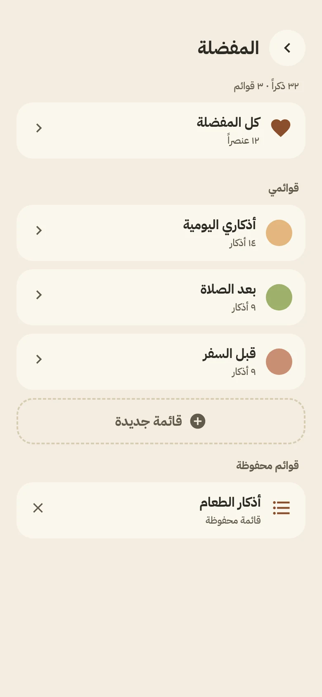
أخفِ ورتّب كما يناسبك
من قائمة الأذكار داخل القارئ تخفي أي ذكر لا تريده فلا يظهر ولا يُحتسب في إكمال الجلسة، وتعيد ترتيب الأذكار بسحب المقبض أو بالضغط المطول، ثم تعود إلى الترتيب الأصلي بزر واحد. يعمل هذا في أذكار الصباح والمساء والنوم وكل الأبواب وقوائمك.
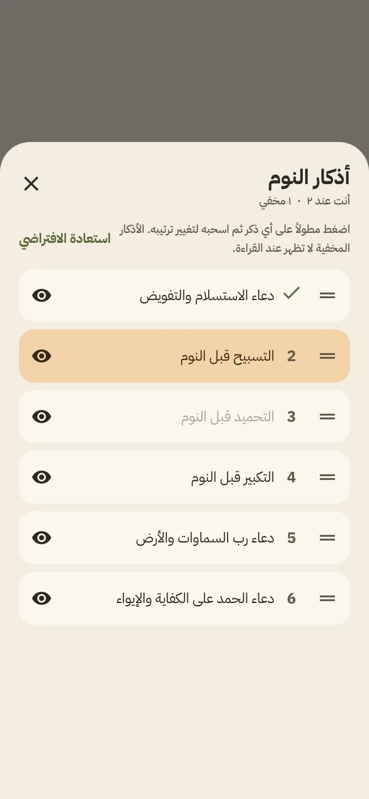
وردك اليومي بتذكيره
أنشئ ورداً بعدد يومي تحدده (استغفار، صلاة على النبي ﷺ، تسبيح…) وعُدّه بضغطة، ويبدأ من الصفر كل صباح. وأضف له تذكيراً مرة واحدة، أو في أيام وساعة تختارها، وعند الضغط على الإشعار يفتح الورد مباشرة.
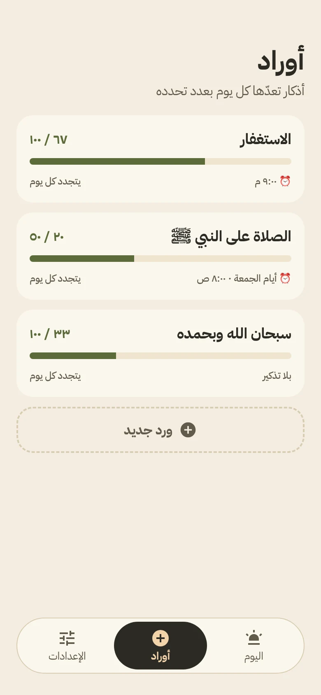
ذكر وقتك على شاشة هاتفك
ويدجت واحد يتبدّل تلقائياً: اختر الأذكار، وحدّد لكل ذكر من أي وقت إلى أي وقت يظهر وفي أي أيام. يدعم المظهر الداكن ويستعمل خطوط التطبيق نفسها، وله معاينة في قائمة ويدجت أندرويد.
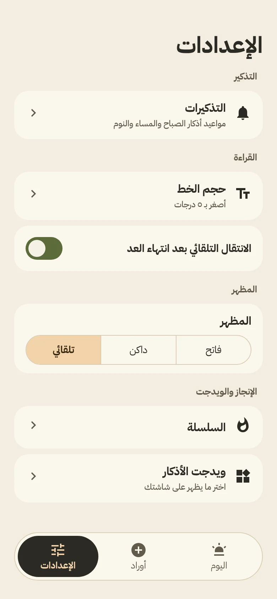
مرتّبة بحسب ما تحتاجه
التذكير أولاً، ثم القراءة (حجم الخط ووزنه وعرض التشكيل والانتقال التلقائي)، ثم المظهر (فاتح أو داكن أو تلقائي)، ثم السلسلة والويدجت، وأخيراً المصادر والتحديث. وتصلك التحديثات من داخل التطبيق.
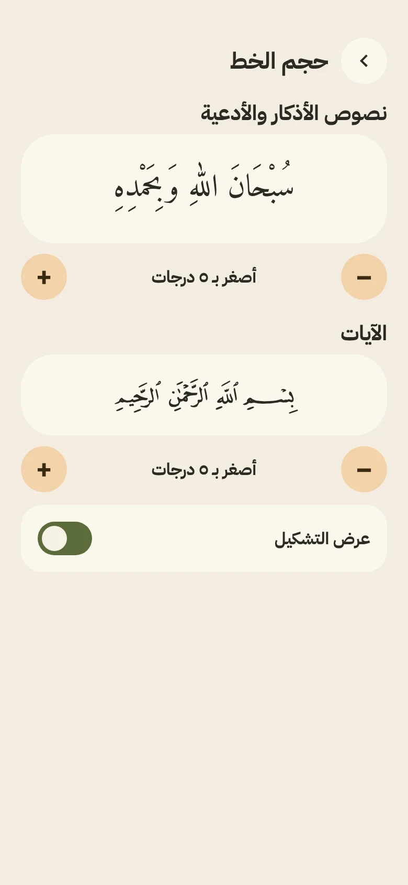
فاتح وداكن، لعين مرتاحة
ألوان دافئة هادئة بتباين مقروء في الوضعين، تتبع إعداد هاتفك أو تختار بنفسك.
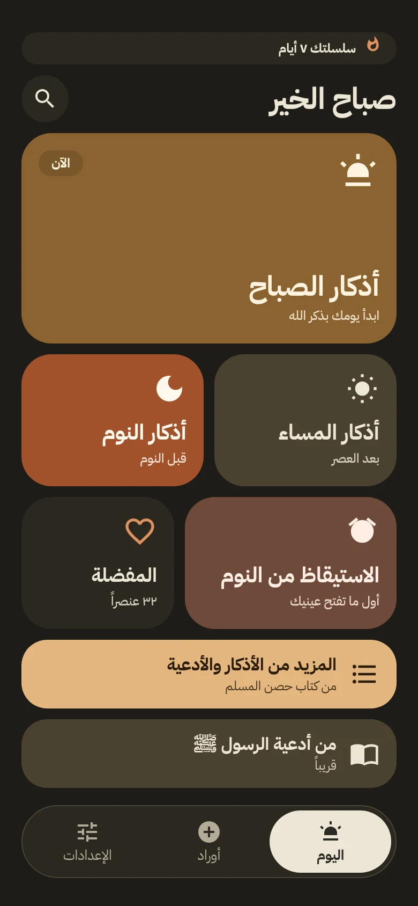
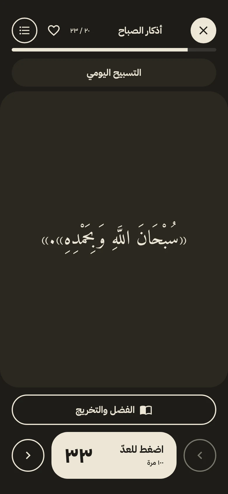
أقسام التطبيق في سطور
اليوم
جلسات الاستيقاظ والصباح والمساء والنوم، وسلسلة الأيام، والمفضلة، والبحث.
المزيد من الأذكار والأدعية
كتاب حصن المسلم في ١١ فئة، يضم أذكار الصلاة والسفر والمرض والطعام وغيرها.
من أدعية الرسول ﷺ
قسم مخصص للأدعية النبوية، سيُفعَّل قريباً.
أوراد
أوراد يومية بعدد وتذكير، تتجدد كل يوم.
الإعدادات
التذكيرات، الخط، الانتقال التلقائي، المظهر، السلسلة، الويدجت، المصادر، التحديث.
خصوصية تامة
كل شيء محفوظ على جهازك، وينتقل معك إلى هاتفك الجديد تلقائياً عبر النسخ الاحتياطي من أندرويد.
التثبيت في ثلاث خطوات
- نزّل الملف على هاتفك، واقبل تنبيه المتصفح إن ظهر.
- اسمح بالتثبيت من المتصفح أو من مدير الملفات عند الطلب.
- ثبّت التطبيق وافتحه. والتحديثات القادمة تصلك من داخل التطبيق.